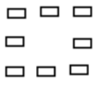

Prueba Suficiencia Academica
Este examen ha sido creado en base a exámenes de admisión de diferentes gestiones de la universidad, con el objetivo de brindarte una práctica más realista y efectiva para tu preparación académica. (SE ACTUALIZA CADA AÑO)
1. Resolver:
Juan, parado en el balcón del colegio, reflexiona
y se dice a sí mismo: “Con la finalidad de ayudar a
mis padres, primero voy a trabajar para poder
estudiar en la universidad”. Juan está elaborando


2. Resolver:
Respecto a una profesión, la orientación vocacional tiene como objetivo explorar si el sujeto posee
3. Resolver:
La psicología se define como
4. Resolver:
La fuente básica del conocimiento psicológico está constituida por
5. Resolver:
Las características psicológicas de cada período de vida constituyen objeto de estudio, principalmente, de la psicología
6. Resolver:
La psicología diferencial, como rama de la psicología, estudia
7. Resolver:
En el campo de la psicología, ¿cuál es el método preferido por los psicólogos para adquirir el conocimiento de una conducta?
8. Resolver:
La característica fundamental del método experimental en psicología consiste en
9. Resolver:
Existen una serie de factores que determinan el comportamiento humano, los mismos que pueden ser agrupados en diversas categorías. El proceso por el cual las células, conexiones nerviosas, tejidos, músculos, glándulas y aparatos receptores adquieren un suficiente nivel de complejidad como para realizar una serie de funciones que le son inherentes, se denomina
10. Resolver:
El estudio de los gemelos idénticos, criados en ambientes diferentes, prueba que
11. Resolver:
En cuanto a la especialización hemisférica del cerebro humano, se ha demostrado que el hemisferio………. se especializa en procesar información……….
12. Resolver:
La conducta de una polilla de dar vueltas alrededor de una luz se denomina
13. Resolver:
Una de las características del proceso de socialización reside en que
14. Resolver:
El proceso mediante el que aprendemos progresivamente a actuar de acuerdo con las normas vigentes en nuestro contexto cultural se denomina
15. Resolver:
La familia compuesta por padres e hijos que conviven con otros parientes en el mismo hogar es denominada
16. Resolver:
A su criterio ¿Cuál es la acción que practican los adolescentes, sin mayor supervisión, que debe canalizarse hacia el desarrollo de la persona y de su comunidad? I. Las pandillas juveniles. II. El juego de fulbito en las calles. III. Participación en clubes y grupos sociales y religiosos. IV. Participación en el sistema educativo. V. Participación en el sistema educativo y laboral.
17. Resolver:
No corresponde a las manifestaciones sociales del comportamiento humano
18. Resolver:
Señale la alternativa correcta. En un evento deportivo o en una concentración política, puede producirse una emoción colectiva y conductas alternativas que oscilan entre
19. Resolver:
Compare las características del liderazgo hoy en día con el liderazgo en la edad media y ordene el siguiente cuadro: (A) Edad Media (B) Hoy endía. I. Tiene carisma. II. Inteligencia emocional. III. Dotes como guerrero. IV. Condiciones innatas. V. Es innovador. VI. Don de mando.
20. Resolver:
Es mejor líder quien posee cualidades en
21. Resolver:
Disposición a responder de manera favorable o desfavorable hacia personas, objetos y situaciones. Se presenta en el plano cognitivo, afectivo y conductual. Es una definición de
22. Resolver:
Coloque verdadero (V) o falso (F) y luego elija la fórmula que crea más conveniente. I. La masturbación perjudica al intelecto. II. La masturbación produce tuberculosis. III. La masturbación envilece al ser humano. IV. La masturbación no es practicada por las mujeres. V. La masturbación produce psicosis.
23. Resolver:
De acuerdo a los campos de la actividad consciente, a qué zona corresponden los ruidos lejanos que se producen fuera de un aula, donde un profesor dicta una clase.
24. Resolver:
Son características de la conciencia
25. Resolver:
Señale la alternativa correcta que hace referencia a los procesos cognitivos básicos
26. Resolver:
A través de determinadas actividades psíquicas, el hombre llega al conocimiento de los diversos aspectos del mundo exterior. Tales son el percibir, el recordar, el imaginar y el pensar. Estas actividades son conocidas con el nombre de
27. Resolver:
Tener la vivencia general de bienestar y plenitud es un ejemplo de sensación
28. Resolver:
Para que haya sensaciones es imprescindible que concurran por lo menos los siguientes elementos
29. Resolver:
Dados los siguientes enunciados señale cuáles son correctos respecto a la percepción extrasensorial. I. Incluye el fenómeno de la clarividencia. II. Involucra también la telepatía. III. Incorpora mensajes subliminales.
30. Resolver:
La percepción es un proceso por el cual una persona interpreta estímulos sensoriales y sigue determinadas leyes. ¿A cuál de ellas ilustra el siguiente gráfico?

31. Resolver:
La paramnesia y la hipermnesia se diferencian fundamentalmente en
32. Resolver:
Un anciano afirma haber estudiado su educación primaria en un centro educativo que fue construido después de que él concluyó sus estudios. Este fenómeno es un caso de
33. Resolver:
Indique la alternativa correcta que corresponde al siguiente concepto: "Cadena de respuestas simbólicas cuya función es representar situaciones experimentadas, posibles, deseables o indeseables de afrontar"
34. Resolver:
¿Qué tipo de pensamiento realizó Cristóbal Colón al reflexionar por qué los barcos, al aproximarse al puerto, parecían “emerger” de las aguas, y que lo llevaría a deducir que la superficie terrestre era esférica?
35. Resolver:
Cuando mentalmente nos representamos la ciudadela de Macchu Picchu en toda su majestuosidad y esplendor, aludimos a la
36. Resolver:
¿Cuál de estos eventos excluye la imaginación?
37. Resolver:
Si los alumnos están en una edad que necesitan que el profesor les proporcione material que puedan manipular y clasificar; entonces, según la teoría de Piaget, ellos se encuentran en la etapa de las operaciones
38. Resolver:
La resolución de problemas nuevos es una de sus características
39. Resolver:
Una joven universitaria cuenta a su amiga, haber probado una sustancia psicoactiva durante su adolescencia por invitación de un grupo de amigos. En aquella ocasión, tuvo mareos, se sintió eufórica y más espontánea. Entre las siguientes conclusiones a las que puede llegar un joven, luego de pasar por este tipo de experiencia, ¿cuál de las expresiones connota menos peligro?
40. Resolver:
Un joven ingeniero mantiene relaciones amicales desde la infancia con jóvenes de su barrio, entre quienes hay algunos que participan en pandillas callejeras. El refrán Dime con quién andas y te diré quién eres se entendería en la conducta del joven, como
41. Resolver:
TEXTO I
…vuelvo a la condición humana, el anciano tuvo un supremo instante de lucidez. Vivió en el espacio de un pálpito, los momentos capitales de su vida; sus lejanos antepasados del África, haciéndole creer en las posibles germinaciones del porvenir. Se sintió viejo de siglos incontables. Un cansancio cósmico, de planeta cargado de piedras, caía sobre sus hombres descarnados por tantos golpes, sudores y rebeldías. Ti Noel había gastado su herencia recibida. Era un cuerpo de carne transcurrida. Y comprendía, ahora, que el hombre nunca sabe para quién padece espera. Padece y espera y trabaja para gente que nunca conocerá, y que a su vez padecerán y esperarán y trabajarán para otros que tampoco serán felices, pues el hombre ansía siempre una felicidad situada más allá de la porción que le es otorgada. Pero la grandeza del hombre está precisamente en querer mejorar lo que es. En imponerse Tareas. En el Reino de los Cielos no hay grandeza que conquistar, puesto que allá todo es jerarquía establecida, incógnita despejada, existir sin término, imposibilidad de sacrificio, reposo y deleite. Por ello, agobiado de penas y de Tareas, hermoso dentro de su miseria, capaz de amar en medio de las plagas, el hombre solo puede hallar su grandeza, su máxima medida del Reino de este Mundo.
La idea más importante, que se infiere del texto I, es:
42. Resolver:
Por la ubicación de la idea principal del texto I, es un párrafo:
43. Resolver:
El título que expresa el sentido global del texto I leído es
44. Resolver:
El enunciado que guarda relación con el texto I leído es
45. Resolver:
TEXTO II
Los cambios tecnológicos y las agitaciones sociales actuales, ¿no significan el fin de la amistad, del amor y de la comunidad?
Son preguntas legítimas, pues si miramos a nuestro alrededor, encontramos abundantes pruebas de derrumbamiento psicológico.
Los nervios están de punta. Estamos hostigados por un ejército de psicópata cuyo comportamiento antisocial es presentado con atractivos rasgos en medios de publicidad.
Toda sociedad debe engendrar un sentimiento de comunidad. La comunidad excluye la soledad.
Sin embargo, actualmente las instituciones de las que dependen la comunidad se están desmoronando en todas las tecnosociedades. El resultado es la plaga de la soledad. Los bares ofrecen lo que un sociólogo de masas, aunque ofreciendo la promesa de una autorrealización individual mucho mayor, está extendiendo la angustia del aislamiento.
Según el texto II, el debilitamiento de la sociedad de masas, supone, particularmente:
46. Resolver:
De acuerdo al texto II, para hacer frente a los vacíos afectivos se requiere
47. Resolver:
Según el texto II, la creación de bares, clubes y discotecas busca…
48. Resolver:
Según el texto II, al autor le preocupa, principalmente:
49. Resolver:
TEXTO III A
Hasta la década de los sesenta una perspectiva «internalista» dominó la historia de la ciencia en el Occidente no-comunista (Solis, 1994, 42 y ss.). Desde este enfoque, la ciencia se desarrolló resolviendo los problemas que presentaba la naturaleza. A cada momento en el desarrollo de la ciencia, la naturaleza presentó problemas que se pudieron resolver con el uso de las teorías y métodos vigentes. La solución de problemas en cada etapa del desarrollo de la ciencia produjo un perfeccionamiento en las teorías y métodos de la ciencia. Para el historiador internalista, la ciencia progresa solucionando los problemas dentro de su estructura. Según este punto de vista, preguntas sobre la financiación de la ciencia o el desarrollo de las estructuras institucionales carecen de interés. Las preguntas más importantes giran en torno a la creación y la diseminación de las mejores teorías posibles en cada etapa del desarrollo de la ciencia.
TEXTO III B
A principios de los sesenta, los jóvenes historiadores de la ciencia experimentaron el libro de Thomas Kuhn, La estructura de las revoluciones científicas (1970), como una brisa fresca en un cuarto en el que huele a humedad. Kuhn ofreció argumentos persuasivos contra la idea de que la ciencia se desarrolla progresivamente según una dinámica definida internamente. En cierto sentido, Kuhn introdujo una perspectiva de comparación cultural en los estudios históricos de la ciencia. Este autor alegó que la ciencia se desarrolló normalmente (y progresó) dentro de un paradigma. Para Kuhn, un paradigma se componía no solo de un conjunto de teorías, sino que también incluía una sensibilidad científica (cómo hacer buenas preguntas, cómo rechazar experimentos malos, cómo escribir un artículo, etc.); además, los paradigmas contenían criterios normativos implícitos. Elegir entre paradigmas era una cuestión de gusto, dedicación y obligación, pero, raramente un asunto de razón lógica. De hecho, los «grupos de adherentes duraderos» (Kuhn, 1970, 10) que trabajan dentro de paradigmas competitivos tenían muchas veces las características de miembros de culturas diferentes.
La controversia central que se establece en la exposición que presentan los textos III A y III B gira entorno a
50. Resolver:
En el texto III B, la metáfora “una brisa fresca en un cuarto en el que huele a humedad” alude a
51. Resolver:
Según el enfoque geopolítico que asume el autor del texto III A, podemos sostener que, en la década del sesenta
52. Resolver:
Según el desarrollo propuesto por Thomas Kuhn, los científicos
53. Resolver:
Desde la perspectiva expuesta en el texto III B, y en función del actual desarrollo de la industria farmacéutica en el mundo, se podría sostener que los científicos que trabajan en ella
54. Resolver:
TEXTO IV A
A continuación, se presentan algunos argumentos que dan los pediatras para vacunar a los infantes. a) Protegen nuestra salud: las vacunas nos resguardan frente a algunos virus y bacterias que causan enfermedades graves y potencialmente mortales. Activan nuestras defensas y ayudan a defendernos de los microorganismos. b) Salvan vidas: actualmente siguen muriendo niños y adultos a causa de enfermedades que se podrían prevenir con vacunas, tales como la polio, el tétanos, la meningitis, la difteria, la tosferina. Sin lugar a dudas, la vacunación y la potabilización del agua han sido las intervenciones de salud pública que más vidas han salvado a lo largo de la historia, y lo siguen haciendo. c) Pueden controlar y eliminar enfermedades: con el esfuerzo coordinado entre muchos países se puede conseguir erradicarlas para siempre. Un ejemplo es la viruela, que fue definitivamente erradicada en 1978, después de haber producido hasta 5 millones de muertes anuales. La polio está cercana a desaparecer, y otras enfermedades (difteria, tétanos, rubeola, etc.) han disminuido mucho y d) Previenen algunos tipos de cáncer y enfermedades degenerativas: está demostrado que la vacuna de la hepatitis B previene la cirrosis y el cáncer de hígado, y la vacuna del virus del papiloma humano (VPH), el cáncer de cuello de útero. La vacuna del sarampión, por su parte, previene enfermedades neurodegenerativas.
TEXTO IV B
Federico Sánchez y su mujer tienen una niña de siente meses. No la han vacunado. Detrás de esta decisión hay una historia de la que la niña es completamente ajena. “En diciembre de 2013 nació nuestro primer hijo y nos sentimos pletóricos cuando nos dijeron que estaba completamente sano. Decidimos vacunarle tal y como se indica en el calendario médico –apunta este padre–. A los siete meses percibimos que tenía falta de tono muscular, pero no le quisimos dar excesiva importancia, siguiendo las recomendaciones de los médicos. Al poco tiempo de ponerle las segundas vacunas, el niño comenzó a tener espasmos”.
Le hicieron pruebas e investigaron qué le estaba ocurriendo. “Fuimos atando cabos de esos pequeños síntomas que sufría y que los médicos no daban importancia y sospechamos que la causa estaba en las vacunas. A través de nuestro abogado nos confirmaron que la ficha técnica de la última vacuna que pusieron a mi hijo tenía un 200 % más de hidróxido de aluminio de lo declarado. El pequeño murió en octubre de 2013. Tenía dos años y diez meses”. A pesar de lo ocurrido, “sigo confiando en los médicos. Parto de la base de que siempre actúan de buena fe, pero, sinceramente, creo que no tienen toda la información necesaria y completa sobre la composición de las vacunas y se fijan en los prospectos, pero no en las fichas técnicas”.
A partir de las razones presentadas por los pediatras, se concluye que
55. Resolver:
En el texto IV B, la frase ATANDO CABOS se emplea en el sentido de
56. Resolver:
De los beneficios que reportan las vacunas a las personas, se puede concluir que
57. Resolver:
De la historia contada por Federico Sánchez, se desprende que
58. Resolver:
La controversia sobre la cual giran ambos textos IV contrapone
59. Resolver:
TEXTO V
Uno de los mayores problemas que puede tener un país es el de la corrupción. Distrae una enorme cantidad de recursos públicos, empeora notablemente los servicios del país y detoriora la legitimidad democrática –en el caso de que exista– Así, el impacto de la corrupción en América Latina (AL) y el Caribe es enorme.
Según los datos que recoge el Índice de Percepciones de la Corrupción, la situación en AL y el Caribe es poco optimista. Salvo un grupo reducido, corno es el caso de Uruguay, Chile o Costa Rica, la situación en el resto de países no invita a pensar que sus sistemas y quienes participan en ellos lo hagan de una forma limpia y responsable.
La corrupción, como otros muchos asuntos que afectan a los países, es un fenómeno complejo y a menudo arraigado en el sistema del que mucha gente participa en mayor o menor medida. Además, también abarca multitud de cuestiones: desde la distracción a gran escala de dinero o recursos públicos hasta pequeños impagos de impuestos, favoritismos en el sector público y en un largo etcétera. Y a menudo converge con otras cuestiones de enorme importancia, como la delincuencia o los grupos de crimen organizado, como los casos de las maras o de los carteles mexicanos.
Los progresos en el caso de AL y el Caribe son escasos en el campo de la reducción de la corrupción. Las redes clientelares y la concepción patrimonial del Estado son, en muchos casos, una barrera considerable a la hora de evitar que distintos actores políticos o económicos intenten aprovecharse de los recursos públicos. Así, desde trabajadores públicos hasta el propio dinero acaban utilizándose para fines o intereses privados, a menudo fuera del escrutinio y el ojo público.
En función de los datos proporcionados en el cuadro, es compatible afirmar que la corrupción en América Latina y el Caribe
60. Resolver:
En Bolivia, en el contexto de los debates sobre transparencia y lucha contra la corrupción en la administración pública, se ha cuestionado que determinadas autoridades o funcionarios actúen sobre los bienes y recursos estatales como si fueran de su propiedad. Esta situación se relaciona con el concepto de “patrimonialismo”, entendido como:
61. Resolver:
Marque la alternativa donde hay uso correcto de las letras mayúsculas
62. Resolver:
Señale la alternativa que presenta uso correcto de la tilde
63. Resolver:
Señale la alternativa que corresponde a una característica del lenguaje humano.
64. Resolver:
Determine qué alternativa presenta escritura correcta
65. Resolver:
¿Qué alternativa presenta correcto empleo del grafema «v»?
66. Resolver:
¿Qué alternativa presenta mayor cantidad de dígrafos?
67. Resolver:
Cuando el lenguaje cumple función fática o de contacto, el elemento de la comunicación que destaca es:
68. Resolver:
Lea los siguientes enunciados y marque la alternativa donde hay palabra que se puede leer de derecha a izquierda sin que ello produzca cambio de significado.
I) Solos lograron alcanzar sus metas.
II) Nadie se percató de su ausencia.
III) Nací en Oruro, a 5 000 m de altura.
IV) Dejó pasar una gran oportunidad.
V) Sabe reconocer que pierde el tiempo.
69. Resolver:
Marque la alternativa en la que aparecen «préstamos» lingüísticos denominados americanismos.
70. Resolver:
Señale la opción en la que se ha aplicado correctamente las reglas del acento escrito
71. Resolver:
20 escolares asisten al centro recreacional Disneyland, los cuales llevan celular,camara o ambos . Se sabe que 5 escolares llevan ambos accesorios y la porporcion de escolares con solo camara es a los escolares con solo celular como 1 es a 2. Se forman grupos de 5 estudiantes para competir en diversos juegos. De cuantas maneras se pueden formar los grupos que tengan un accesorio solamente del mismo tipo?
72. Resolver:
En un avion el numero abc de personas que viajan satisface 150<abc<300 de los cuales aOc son hombres y ab son mujeres siendo pasajeros,ademas son c aeromozas y a pilotos. Determine la suma de los digitos luego de calcular cuantos hombres mas que mujeres hay en el avion en total.
73. Resolver:
Determine el valor de (a+b+c) si a1a+a2a...a9a=bcd4
74. Resolver:
En la diferencia que se muestra 91001- 71001=.....a, donde la cifra de las unidades es "a", halla a3 + a2+2
75. Resolver:
Sea ab un numero mayor que 40, determine el numero de divisores que tiene el numero abab00
76. Resolver:
Sea A un numero entero positivo de 10 cifras y B=0,abcdefg donde g es diferente de cero,del producto AB se afirma que
I. es un numero entero
II. puede ser entero que tiene 2 cifras
III. puede ser entero que tiene parte entera no nula y parte decimal no nula
77. Resolver:
Dado un cuadrado ABCD de lado a>6, exterior a un plano P.Si las distancias A,B,C al plano P son 3,6,7 halle la distancia D al plano P
78. Resolver:
Sea ABCD un rectangulo M el punto medio de BC, PM perpendicular al plano ABC , O centro del rectangulo , si BC=2AB=8 y PM=AB, entonces el area de la region triangular APO es...
79. Resolver:
El ponente en un Congreso de Matemática mencionó a su audiencia «¡Qué curioso!, la cantidad de personas presentes es igual a la cantidad de fracciones propias e irreducibles que existen de la forma 𝑁/161». ¿Cuántas personas asistieron a dicho Congreso?
80. Resolver:
La profesora Milagros forma grupos de trabajo de por lo menos tres estudiantes por cada grupo. Si en el salón hay 11 estudiantes, ¿cuántas opciones distintas tiene para formar los grupos?
81. Resolver:
Una liebre perseguida por un galgo se encuentra a 80 saltos de liebre delante del galgo. la liebre da 4 saltos mientras que en el mismo tiempo el galgo da 3. si 5 saltos del galgo equivalen a 7 saltos de la liebre. cuantos saltos dara la liebre antes de ser alcanzados por el galgo?
82. Resolver:
83. Resolver:
84. Resolver:
85. Resolver:
86. Resolver:
se tiene un logaritmo cuya base es 5 multiplicado por la raiz de 5, el antilogaritmo es 3125, el logaritmo x, determine su valor
87. Resolver:
el logaritmo de que numero es 8, si la base de dicho logaritmo es 2 raiz de 2
88. Resolver:
hallar el numero de terminos de la siguiente expresion:
18;24;30;36...;282
89. Resolver:
hallar el vigesimo termino
40,44,48,52
90. Resolver:
Juan no pudiendo cancelar una deuda de bs 12950 le propone a su acreedor pagarle del siguiente modo : bs 600 al final del primer mes y cada mes siguiente bs 50 mas que el anterior . cual sera el importe del ultimo pago
91. Resolver:
el sexto termino de una progresion geometrica es 3072 y el tercer termino es 48, cual es la progresion
92. Resolver:
la suma de 10 terminos de una progresion geometrica es -682 y la razon es -2. Hallar el sexto termino
93. Resolver:
en una p.a. el tercer termino es igual a 4 veces el primero y el septimo termino es 20. si la suma de los primeros terminos es 260 hallar "n"
94. Resolver:
95. Resolver:
dos camaras de video,situadas al sur y el este de base de un poste en posicion vertical, visualizan el extremo superior del poste con angulo de 60 y 45 respectivamente. si la distancia entre los puntos
de ubicacion entre ambas camaras 12/√ 2, hallar la altura del poste
96. Resolver:
desde un punto de vista R se alcanza a ver 2 extremos p y q ,de la base de un puente , si rp=50 y rq=70 y el angulo prq es 45 grados, cual es la longitud del puente
97. Resolver:
98. Resolver:
al copiar de la pizarra la expresion sen40 - sen20;
un estudiante cometio un error y escribio cos40 - cos20. calcule la razon entre lo que estaba escrito en la pizarra y lo que copio el alumno
99. Resolver:
si α,β,γ son las medidas de los angulos interiores de un triangulo tal que "α<β<γ" , ademas γ=2α.
si las medidas de los lados son numericamente iguales a 3 numeros consecutivos, entonces senβ es:
100. Resolver:
calcule todos la suma de los valores naturales que verifiquen esta inecuacion